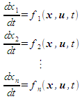
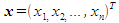
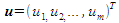
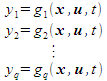
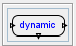
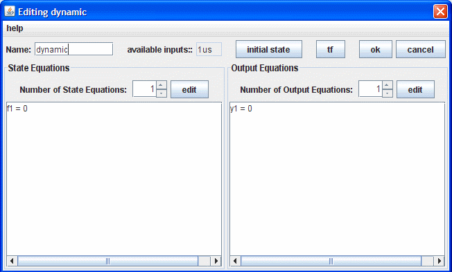
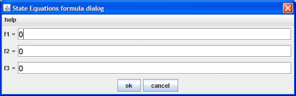

Dynamic System module is intended to simulate systems which have internal state. Such systems can be represented by the following state equations and output equations.
The state equations:

where  represents the state vector of the system, and  represents the input vector into the system.
The output equations:

Click the  button on the tool bar or the corresponding item in the “Component” menu. A icon for the dynamic module will appear on the panel.
You can drag the icon to appropriate position.
You can double click the icon to bring forth the “DynamicEditor” as shown below

Select the order of this dynamic module by pressing the “Number of State Equations” spinner to select the order of the module, and then press the corresponding “edit” button to edit the state equations. Then the following dialog window will appear

You can also edit the output equation similarly.
When entering the model for a linear system, you can first select the system order using the “Number of state equations” spinner and select the output number by the “number of output equations” spinner, then click the “tf” button to edit the transfer function.
Good Luck!